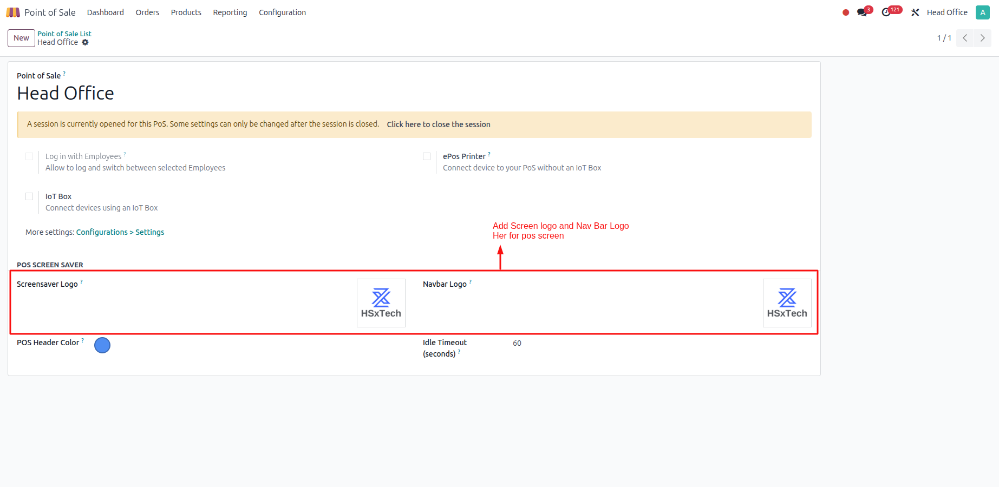
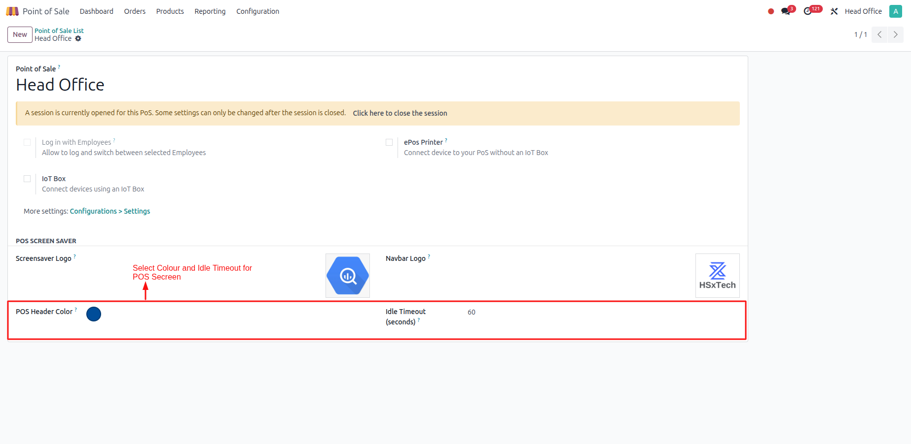
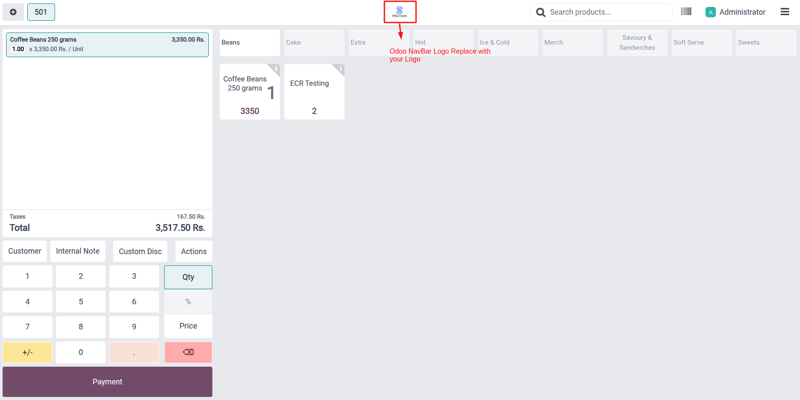
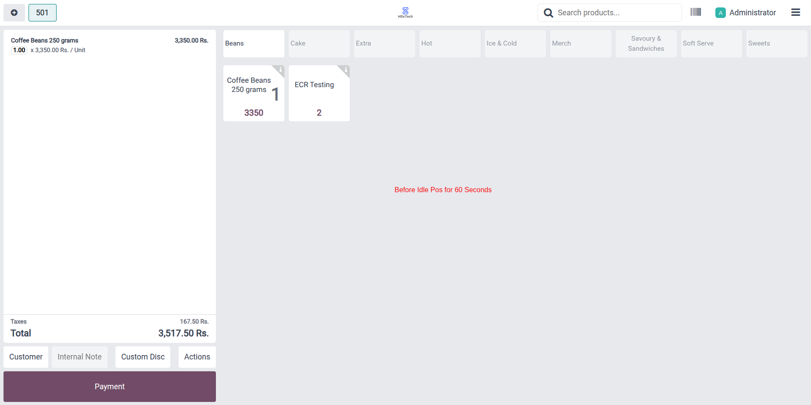
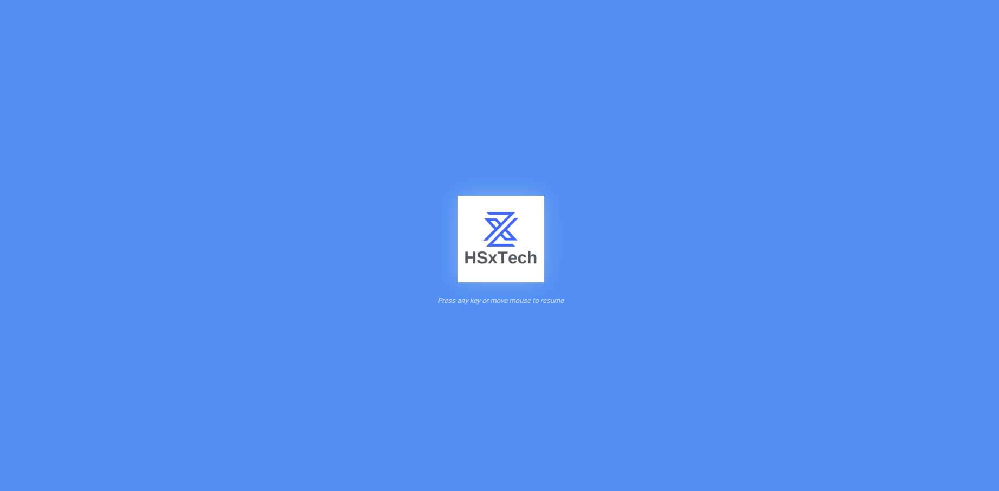

POS Screensaver
Enhance Point of Sale with a professional idle screensaver and consistent branding. Upload a custom screensaver logo, set a custom navbar logo, choose a theme color, and configure the idle timeout. When the POS is inactive for the configured time, the screensaver appears automatically and disappears on any activity.
What this module does
Add a custom branded screensaver to the POS interface. Configure the idle timeout in POS settings, upload a screensaver logo, optionally set a navbar logo, and apply a theme color to the POS header. The screensaver activates after inactivity and closes automatically when the cashier resumes interaction.
Configuration
Configure screensaver branding inside your POS configuration, then launch the POS session.
- Go to Point of Sale → Configuration → Point of Sale.
- Open your POS configuration.
- Upload a Screensaver Logo (image) for the idle overlay.
- Upload a Navbar Logo (optional) to brand the POS header.
- Set POS Header Color to match your theme.
- Set Idle Timeout (seconds) to control when the screensaver activates.
Screenshots




